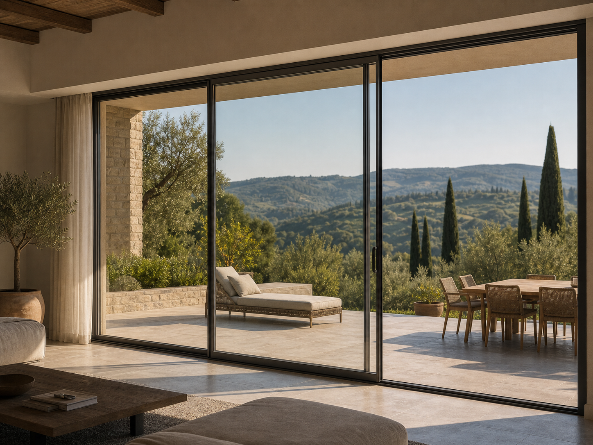

Descrizione
Soluzioni pensate per collegare zona giorno, terrazze, giardini e ambienti commerciali con grandi superfici vetrate.

Catalogo
Pagina predisposta per sistemi scorrevoli, vetrate panoramiche, grandi aperture e soluzioni luminose per interni ed esterni.
Richiedi preventivoSoluzioni pensate per collegare zona giorno, terrazze, giardini e ambienti commerciali con grandi superfici vetrate.
Raccontaci misure, contesto e destinazione d'uso.